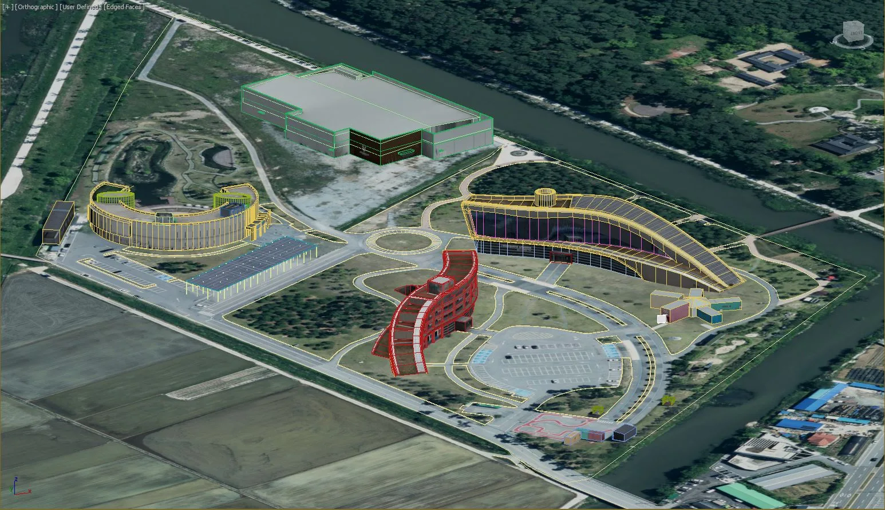
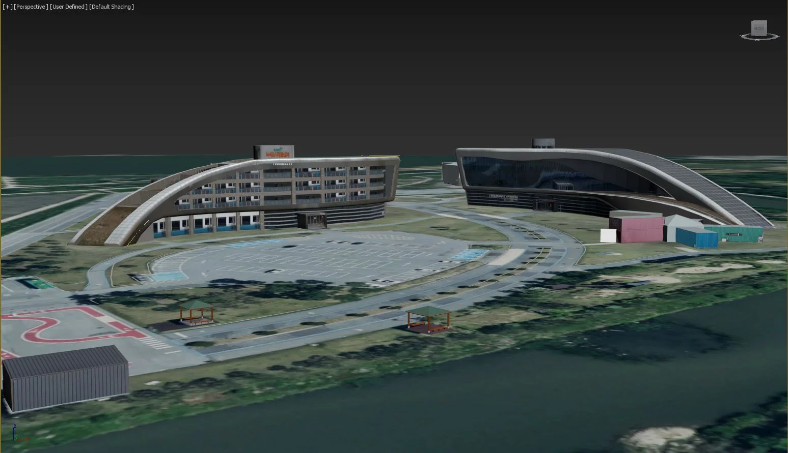
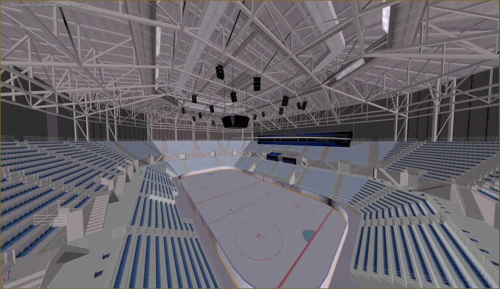
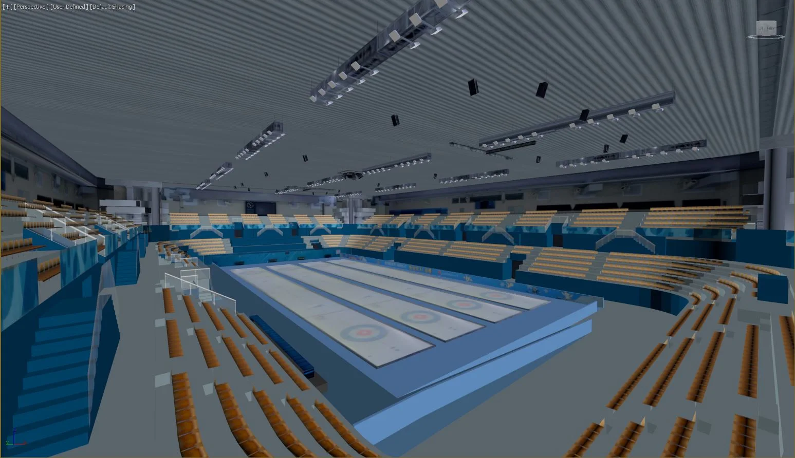

강릉시 난설헌로 131에 위치한 강릉 녹색도시 체험센터와 경포 아쿠아리움, 아르떼뮤지엄을 3D로 제작함과 동시에 강릉 컬링센터, 강릉 올림픽 파크 하키센터 내부도 VR 3D 데이터 작업이 필요한 프로젝트를 착수하게 되었습니다.
조감도와 달리 VR 3D 데이터는 보여지는 모습도 중요하지만 VR을 제작하게 될 프로그램과 데이터가 불러와 졌을때 깨끗하게 호환 될 수 있게 작업하는 것이 중요합니다.
프로젝트의 진행과정
모델링이 필요한 체험센터와 경기장 두군데 현장 사진을 보내주셨고 사진을 참고로 하여 현장과 동일한 스케일로 제작하였습니다.
진행하는 중간중간 모델링 데이터를 캡처 혹은 FBX형태로 발송하여 호환성과 작업에 대한 피드백을 주고 받으며 진행하였습니다.
결과물





마치며
메이크그룹은 다양한 3d 모델 데이터 구축 및 360도 VR 렌더링이 가능하니 편안하게 문의해주시면 감사하겠습니다.
이상 메이크 그룹이였습니다. 감사합니다.
홈페이지
https://www.makegroup.co.kr/
블로그
https://blog.naver.com/makegroupcg